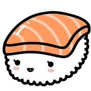
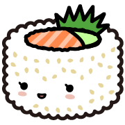
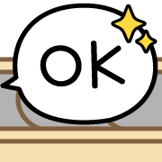
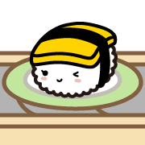
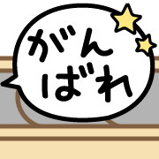
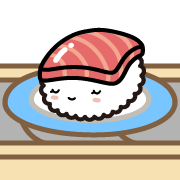
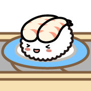

- sushiyuki_magurohttps://awayuki.github.io/emoji/v1-001.png

- sushiyuki_tamagohttps://awayuki.github.io/emoji/v1-002.png

- sushiyuki_ebihttps://awayuki.github.io/emoji/v1-003.png

- sushiyuki_ikurahttps://awayuki.github.io/emoji/v1-004.png

- sushiyuki_hamachihttps://awayuki.github.io/emoji/v1-005.png
- 
- sushiyuki_salmonhttps://awayuki.github.io/emoji/v1-006.png

- sushiyuki_kohadahttps://awayuki.github.io/emoji/v1-007.png
- sushiyuki_ikahttps://awayuki.github.io/emoji/v1-008.png

- sushiyuki_unihttps://awayuki.github.io/emoji/v1-009.png
- sushiyuki_anagohttps://awayuki.github.io/emoji/v1-010.png

- sushiyuki_sharihttps://awayuki.github.io/emoji/v1-011.png
- sushiyuki_torohttps://awayuki.github.io/emoji/v1-012.png

- sushiyuki_amaebihttps://awayuki.github.io/emoji/v1-013.png

- sushiyuki_negitorohttps://awayuki.github.io/emoji/v1-014.png

- sushiyuki_menegihttps://awayuki.github.io/emoji/v1-015.png

- sushiyuki_inarihttps://awayuki.github.io/emoji/v1-016.png

- sushiyuki_sabahttps://awayuki.github.io/emoji/v1-017.png

- sushiyuki_futomakihttps://awayuki.github.io/emoji/v1-018.png

- sushiyuki_tekkamakihttps://awayuki.github.io/emoji/v1-019.png

- sushiyuki_kappamakihttps://awayuki.github.io/emoji/v1-020.png
- 
- sushiyuki_sushirollhttps://awayuki.github.io/emoji/v1-021.png

- sushiyuki_kappahttps://awayuki.github.io/emoji/v1-022.png

- sushiyuki_agarihttps://awayuki.github.io/emoji/v1-023.png

- sushiyuki_twinklehttps://awayuki.github.io/emoji/v1-024.png

- sushiyuki_flowerhttps://awayuki.github.io/emoji/v1-025.png

- sushiyuki_starhttps://awayuki.github.io/emoji/v1-026.png

- sushiyuki_hearthttps://awayuki.github.io/emoji/v1-027.png

- sushiyuki_musical_noteshttps://awayuki.github.io/emoji/v1-028.png
- sushiyuki_tear_drophttps://awayuki.github.io/emoji/v1-029.png

- sushiyuki_sweathttps://awayuki.github.io/emoji/v1-030.png

- sushiyuki_angerhttps://awayuki.github.io/emoji/v1-031.png

- sushiyuki_surprisedhttps://awayuki.github.io/emoji/v1-032.png
- susyiyuki_questionhttps://awayuki.github.io/emoji/v1-033.png

- sushiyuki_exclamationhttps://awayuki.github.io/emoji/v1-034.png

- sushiyuki_double_exclamationhttps://awayuki.github.io/emoji/v1-035.png

- sushiyuki_exclamation_questionhttps://awayuki.github.io/emoji/v1-036.png

- sushiyuki_belt_magurohttps://awayuki.github.io/emoji/v1-037.png

- sushiyuki_belt_ebihttps://awayuki.github.io/emoji/v1-038.png

- sushiyuki_belt_tamagohttps://awayuki.github.io/emoji/v1-039.png

- sushiyuki_belthttps://awayuki.github.io/emoji/v1-040.png
- sushiyuki_belt_torohttps://awayuki.github.io/emoji/v2-001.png
- 
- sushiyuki_belt_okhttps://awayuki.github.io/emoji/v2-002.png
- 
- sushiyuki_belt_tamago2https://awayuki.github.io/emoji/v2-003.png
- sushiyuki_belt_ryokaihttps://awayuki.github.io/emoji/v2-004.png

- sushiyuki_belt_hamachihttps://awayuki.github.io/emoji/v2-005.png

- sushiyuki_belt_haihttps://awayuki.github.io/emoji/v2-006.png
- sushiyuki_belt_ikurahttps://awayuki.github.io/emoji/v2-007.png

- sushiyuki_belt_arigatouhttps://awayuki.github.io/emoji/v2-008.png

- sushiyuki_belt_ebi2https://awayuki.github.io/emoji/v2-009.png

- sushiyuki_belt_waaihttps://awayuki.github.io/emoji/v2-010.png

- sushiyuki_belt_salmonhttps://awayuki.github.io/emoji/v2-011.png
- sushiyuki_belt_yoroshikuhttps://awayuki.github.io/emoji/v2-012.png

- sushiyuki_belt_kohadahttps://awayuki.github.io/emoji/v2-013.png

- sushiyuki_belt_iinehttps://awayuki.github.io/emoji/v2-014.png

- sushiyuki_belt_ikahttps://awayuki.github.io/emoji/v2-015.png

- sushiyuki_belt_otsukarehttps://awayuki.github.io/emoji/v2-016.png

- sushiyuki_belt_unihttps://awayuki.github.io/emoji/v2-017.png
- 
- sushiyuki_belt_ganbarehttps://awayuki.github.io/emoji/v2-018.png

- sushiyuki_belt_anagohttps://awayuki.github.io/emoji/v2-019.png
- sushiyuki_belt_matanehttps://awayuki.github.io/emoji/v2-020.png

- sushiyuki_belt_sharihttps://awayuki.github.io/emoji/v2-021.png

- sushiyuki_belt_ohayouhttps://awayuki.github.io/emoji/v2-022.png
- 
- sushiyuki_belt_maguro2https://awayuki.github.io/emoji/v2-023.png

- sushiyuki_belt_oyasumihttps://awayuki.github.io/emoji/v2-024.png
- 
- sushiyuki_belt_amaebihttps://awayuki.github.io/emoji/v2-025.png

- sushiyuki_belt_warahttps://awayuki.github.io/emoji/v2-026.png

- sushiyuki_belt_negitorohttps://awayuki.github.io/emoji/v2-027.png

- sushiyuki_belt_namidahttps://awayuki.github.io/emoji/v2-028.png

- sushiyuki_belt_menegihttps://awayuki.github.io/emoji/v2-029.png

- sushiyuki_belt_asehttps://awayuki.github.io/emoji/v2-030.png

- sushiyuki_belt_inarihttps://awayuki.github.io/emoji/v2-031.png

- sushiyuki_belt_sabahttps://awayuki.github.io/emoji/v2-032.png
- sushiyuki_belt_tekkamakihttps://awayuki.github.io/emoji/v2-033.png

- sushiyuki_belt_kappamakihttps://awayuki.github.io/emoji/v2-034.png

- sushiyuki_belt_kappahttps://awayuki.github.io/emoji/v2-035.png

- sushiyuki_belt_heart1https://awayuki.github.io/emoji/v2-036.png

- sushiyuki_belt_heart2https://awayuki.github.io/emoji/v2-037.png
- sushiyuki_belt_beerhttps://awayuki.github.io/emoji/v2-038.png

- sushiyuki_belt_puddinghttps://awayuki.github.io/emoji/v2-039.png

- sushiyuki_belt_coffeehttps://awayuki.github.io/emoji/v2-040.png
- nostopus_walkhttps://awayuki.github.io/emoji/np-001.gif

- nostopus_spinhttps://awayuki.github.io/emoji/np-002.gif
ご利用について
- 個人の方がご自分でSNSなどで絵文字として使うのは、そのままご自由にお使いください。
- 他の人が使用するために再配布する場合は「 ©awayuki 」のクレジットとこの利用規約 https://awayuki.github.io/emojis#terms について記載をお願いします。
- 商用利用は禁止します。
- アートワークの改変を禁止します。